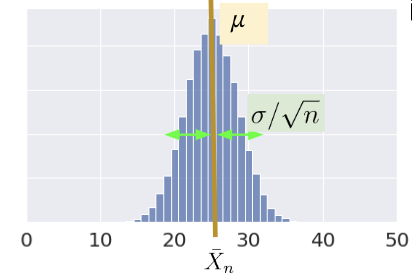
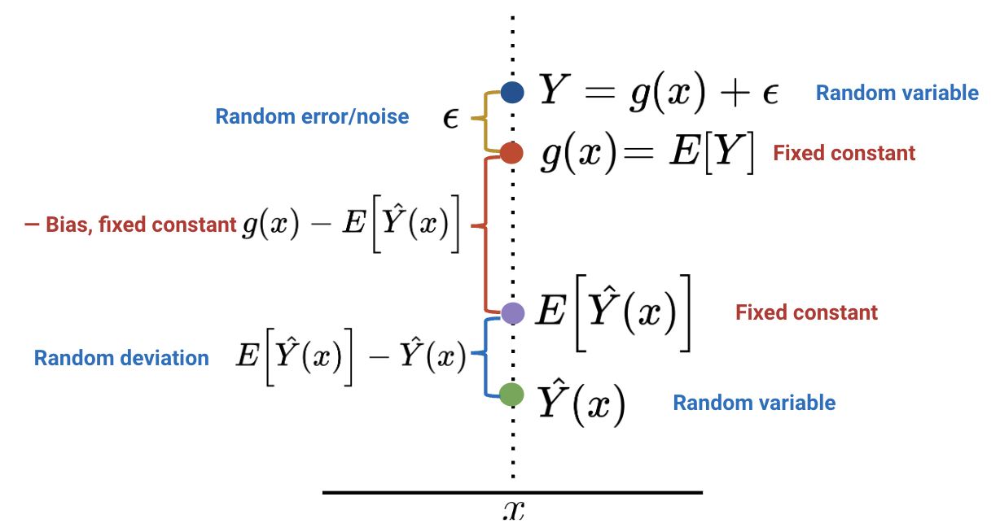
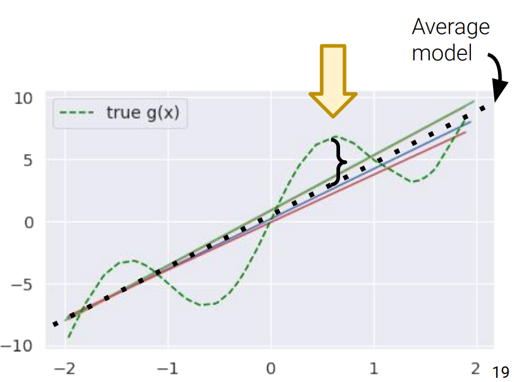
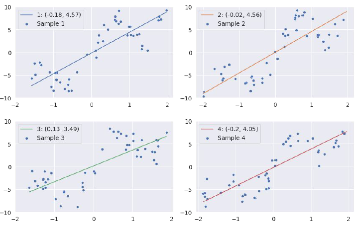
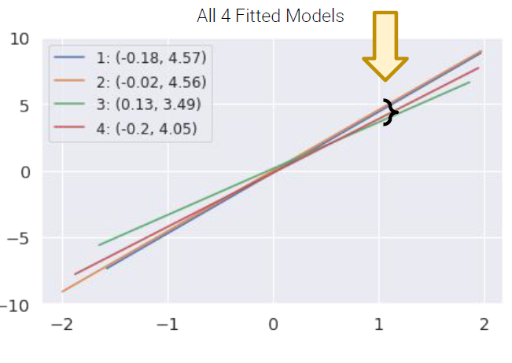

Probability II
Last time, we introduced the idea of random variables: numerical functions of a sample. Most of our work in the last lecture was done to build a background in probability and statistics. Now that we’ve established some key ideas, we’re in a good place to apply what we’ve learned to our original goal – understanding how the randomness of a sample impacts the model design process.
In this lecture, we will delve more deeply into this idea of fitting a model to a sample. We’ll explore how to re-express our modeling process in terms of random variables and use this new understanding to steer model complexity.
Sample Statistics
In the last lecture, we talked at length about the concept of a distribution – a statement of all possible values that a random variable can take, as well as the probability of the variable taking on each value. Let’s take a moment to refine this definition.
- The distribution of a population describes how a random variable behaves across all individuals of interest.
- The distribution of a sample describes how a random variable behaves in a specific sample from the population.
In data science, we seldom have access to the entire population we wish to investigate. If we want to understand the distribution of a random variable across the population, we often need to use the distribution of collected samples to infer the properties of the population. For example, say we wish to understand the distribution of heights of people across the US population. We can’t directly survey every single person in the country, so we might instead take smaller samples of heights and use these samples to estimate the population’s distribution.
A common situation is wishing to know the mean of a population (eg the average height of all people in the US). In this case, we can take several samples of size \(n\) from the population, and compute the mean of each sample.
In Data 8, you encountered the Central Limit Theorem (CLT). This is a powerful theorem for estimating the distribution of a population with mean \(\mu\) and standard deviation \(\sigma\) from a collection of smaller samples. The CLT tells us that if an IID sample of size \(n\) is large, then the probability distribution of the sample mean is roughly normal with mean \(\mu\) and SD \(\sigma/\sqrt{n}\). In simpler terms, this means:
- Draw a sample of size \(n\) from the population
- Compute the mean of this sample; call it \(\bar{X}_n\)
- Repeat this process: draw many more samples and compute the mean of each
- The distribution of these sample means is normal with standard deviation \(\sigma/\sqrt{n}\) and mean equal to the population mean, \(\mu\)

Importantly, the CLT assumes that each observation in our samples is drawn IID from the distribution of the population. In addition, the CLT is accurate only when \(n\) is “large.” What counts as a “large” sample size depends on the specific distribution. If a population is highly symmetric and unimodal, we could need as few as \(n=20\); if a population is very skewed, we need a larger \(n\). Classes like Data 140 investigate this idea in great detail.
Why is this helpful? Consider what might happen if we estimated the population distribution from just one sample. If we happened, by random chance, to draw a sample with a different mean or spread than that of the population, we might get a skewed view of how the population behaves (consider the extreme case where we happen to sample the exact same value \(n\) times!). By drawing many samples, we can consider how the sample distribution varies across multiple subsets of the data. This allows us to approximate the properties of the population without the need to survey every single member.
Notice the difference in variation between the two distributions that are different in sample size. The distribution with bigger sample size (\(n=800\)) is tighter around the mean than the distribution with smaller sample size (\(n=200\)). Try plugging in these values into the standard deviation equation for the normal distribution to make sense of this!
Prediction and Inference
At this point in the course, we’ve spent a great deal of time working with models. When we first introduced the idea of modeling a few weeks ago, we did so in the context of prediction: using models to make predictions about unseen data.
Another reason we might build models is to better understand complex phenomena in the world around us. Inference is the task of using a model to infer the true underlying relationships between the feature and response variables. If we are working with a set of housing data, prediction might ask: given the attributes of a house, how much is it worth? Inference might ask: how much does having a local park impact the value of a house?
A major goal of inference is to draw conclusions about the full population of data, given only a random sample. To do this, we aim to estimate the value of a parameter, which is a numerical function of the population (for example, the population mean \(\mu\)). We use a collected sample to construct a statistic, which is a numerical function of the random sample (for example, the sample mean \(\bar{X}_n\)). It’s helpful to think “p” for “parameter” and “population,” and “s” for “sample” and “statistic.”
Since the sample represents a random subset of the population, any statistic we generate will likely deviate from the true population parameter. We say that the sample statistic is an estimator of the true population parameter. Notationally, the population parameter is typically called \(\theta\), while its estimator is denoted by \(\hat{\theta}\).
To address our inference question, we aim to construct estimators that closely estimate the value of the population parameter. We evaluate how “good” an estimator is by answering three questions:
- Do we get the right answer for the parameter, on average?
- How variable is the answer?
- How close is our answer to the parameter?
The bias of an estimator is how far off it is from the parameter, on average.
\[\text{Bias}(\hat{\theta}) = \mathbb{E}[\hat{\theta} - \theta] = \mathbb{E}[\hat{\theta}] - \theta\]
For example, the bias of the sample mean as an estimator of the population mean is:
\[\begin{align}\mathbb{E}[\bar{X}_n - \mu] &= \mathbb{E}[\frac{1}{n}\sum_{i=1}^n (X_i)] - \mu \\ &= \frac{1}{n}\sum_{i=1}^n \mathbb{E}[X_i] - \mu \\ &= \frac{1}{n} (n\mu) - \mu \\ &= 0\end{align}\]
Because its bias is equal to 0, the sample mean is said to be an unbiased estimator of the population mean.
The variance of an estimator is a measure of how much the estimator tends to vary from its mean value.
\[\text{Var}(\hat{\theta}) = \mathbb{E}\left[(\hat{\theta} - \mathbb{E}[\hat{\theta}])^2 \right]\]
Modeling as Estimation
Now that we’ve established the idea of an estimator, let’s see how we can apply this learning to the modeling process. To do so, we’ll take a moment to formalize our data collection and models in the language of random variables.
Say we are working with an input variable, \(x\), and a response variable, \(Y\). We assume that \(Y\) and \(x\) are linked by some relationship \(g\) – in other words, \(Y = g(x)\). \(g\) represents some “universal truth” or “law of nature” that defines the underlying relationship between \(x\) and \(Y\).
As data scientists, we have no way of directly “seeing” the underlying relationship \(g\). The best we can do is collect observed data out in the real world to try to understand this relationship. Unfortunately, the data collection process will always have some inherent error (think of the randomness you might encounter when taking measurements in a scientific experiment). We say that each observation comes with some random error or noise term, \(\epsilon\). This error is assumed to be a random variable with expectation 0, variance \(\sigma^2\), and be IID across each observation. The existence of this random noise means that our observations, \(Y(x)\), are random variables.
\[\text{True relationship: }Y = g(x)\]
\[\text{Observed relationship: }Y = g(x) + \epsilon\]

We can only observe our random sample of data, represented by the blue points above. From this sample, we want to estimate the true relationship \(g\). We do this by constructing the model \(\hat{Y}(x)\) to estimate \(g\).

If we assume that the true relationship \(g\) is linear, we can re-express this goal in a slightly different way. The observed data is generated by the relationship:
\[Y(x) = g(x) + \epsilon = \theta_0 + \theta_1 x_1 + \ldots + \theta_p x_p + \epsilon\]
We aim to train a model to obtain estimates for each \(\theta_i\), which we refer to as \(\hat{\theta}_i\). Because \(\hat{Y}\) is a fit to random data, we say that it is also a random variable.
\[\hat{Y}(x) = \hat{\theta}_0 + \hat{\theta}_1 x_1 + \ldots + \hat{\theta}_p x_p\]
Notice that \(Y\) is dependent on \(\epsilon\), which means that \(Y\) is a random variable itself. Additionally, the parameters of our model, \(\hat{Y}\), is also dependent on this randomnness, which means our predictor is random itself.
The Bias Variance Trade-off
Once we view our data and estimators as random variables, the process of how finding which models provide us with the best long run behaviors becomes more clear. Using concepts such as expectation and variances of the aforementioned random variables allows us to create theory for predicting the performance of models that works independently of the samples we actually collect. In this section, we will breakdown how this knowledge is summarized into 4 simple words: bias-variance trade-off.

Model Risk
First, we must define formulate our previous notions of training error and testing error into the form of a random variable. This parameter is called the model risk. This is the expectation of our prediction errors, the difference between the true \(Y\) value and our predicted \(Y\) value, over all possible samples at any fixed \(x\).
model risk = \(\mathbb{E}[(Y-\hat{Y}(x))^2]\)
The Three Components of Model Risk
There are three types of errors that contribute to model risk: observation variance, bias, and model variance. The proof for the breakdown is out of scope, but understanding what this relationship tells us is crucial.
Observation Variance(\(\sigma^2\)): irreducible random noise from the variability of \(\epsilon \sim N(0,\sigma^2)\) term in Y.
Bias(\(g(x) - \hat{Y}(x)\)): the difference between our model and the underlying function g.
Model Variance(\(E[(\hat{Y}(x) - E[\hat{Y}(x)])^2]\)): the variability of our due to the randomness of the sample X’s.
$[(Y-(x))^2] = + ^2 + $

Observation Variance
The source of observation variance is the assumed random noise in our data, Y. As a part of the model, we can not perfectly control the data we observe: it is what it is. We call it irreducible for this reason.
Sources:
- measurement error
- missing information
Remedies:
- Out of scope
Bias
The underlying true relationship g(x) is unknowable. The model bias is the difference between our model, the approximation of g(x), and the truth across all possible samples at an \(x\). In short, bias is an average measure for a specific point x. This most commonly comes from making over-simplifications.
Source:
- Underfitting
- False assumption about the relationship between X and Y
Remedies:
- Consult experts to ensure all relevant features are in the model.

Model Variance
Since the fitted model is based on a random sample, then, if the sample came out differently, we would have a different model. This variability across samples is our model variance.
Sources:
- Overfitting
- High model complexity that makes the model sensitive to changes in the data.
Remedies:
- Reduce model complexity


Putting it all together
\(\mathbb{E}[(Y-\hat{Y}(x))^2] = \sigma^2 + (E[\hat{Y}(x)] - g(x))^2 + Var(\hat{Y}(x))\)
Notes:
- Model risk is an expectation and is therefore a fixed number (for a given x and model \(\hat{Y}(x)\)).
- Observation variance is irreducible.
- As models increase in complexity, they often overfit the sample data and will have higher model variance. This often corresponds to a decrease in bias.
- As models decrease in complexity, they often underfit the sample data and have lower model variance. This corresponds to an increase in bias.